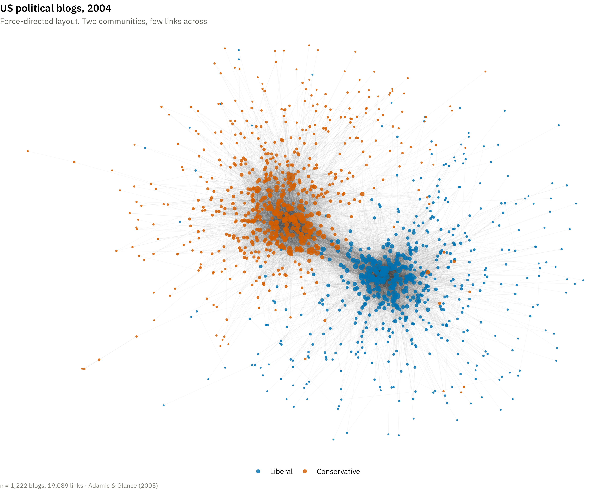

Show the R code
set.seed(3)
ggraph(g, layout = "fr") +
geom_edge_link(alpha = .04, colour = "#3a3a34",
edge_width = .2, show.legend = FALSE) +
geom_node_point(aes(colour = side, size = deg), alpha = .8) +
scale_colour_manual(values = pal, name = NULL) +
scale_size_continuous(range = c(.4, 4), guide = "none") +
labs(title = "US political blogs, 2004",
subtitle = "Force-directed layout. Two communities, few links across",
caption = sprintf("n = %s blogs, %s links · Adamic & Glance (2005)",
format(gorder(g), big.mark = ","),
format(gsize(g), big.mark = ","))) +
theme_void(base_family = dsvar_font()) +
theme(plot.title = element_text(face = "bold", size = 12, hjust = 0),
plot.subtitle = element_text(size = 9.5, colour = "#5a5a52", hjust = 0),
plot.caption = element_text(size = 7.5, colour = "#7a7a70", hjust = 0),
legend.position = "bottom")